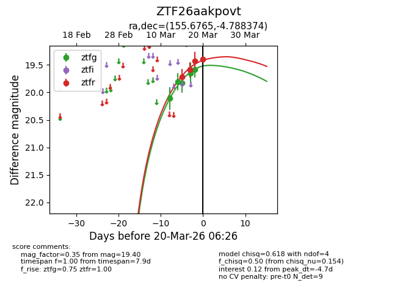
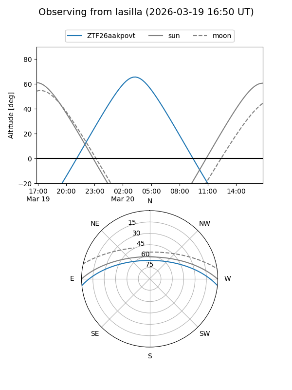
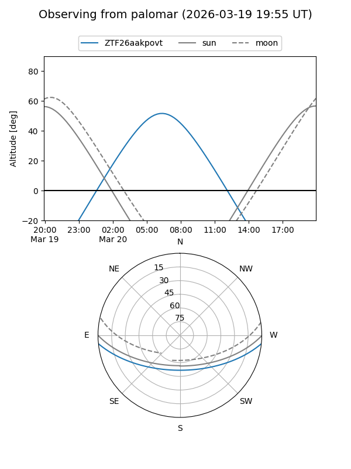
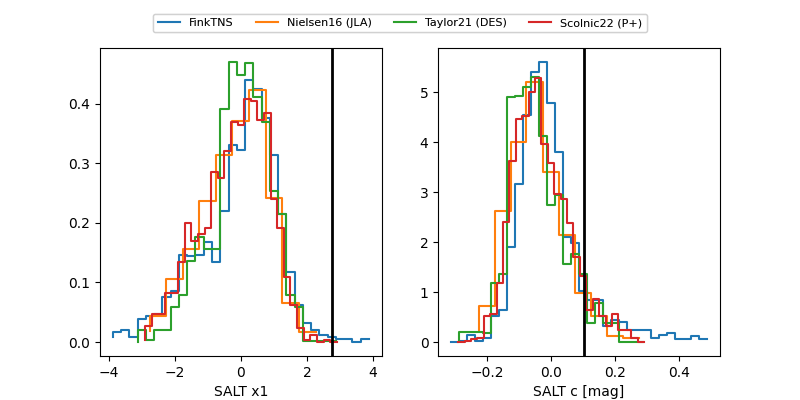

ZTF26aakpovt
Target ZTF26aakpovt at 2026-03-20 06:28
Aliases and brokers:
FINK: link
Lasair: link
ALeRCE: link
alt names
ZTF26aakpovt (ztf,fink_ztf)
Coordinates:
equatorial (ra, dec) = 155.6765,-4.78837
equatorial (HMS+DMS) = 10:22:42.37,-04:47:18.15
galactic (l, b) = (248.8540,+41.95325)
Flags:
Photometry:
last ztfg=19.59, ztfr=19.40
5 ztfg, 4 ztfr detections
Lightcurve

Visibility


Additional plots
